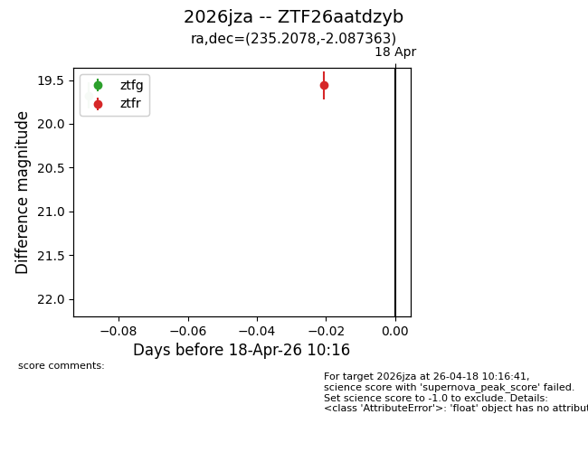
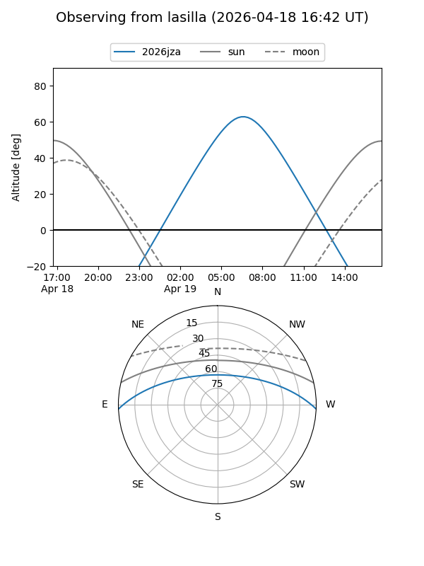
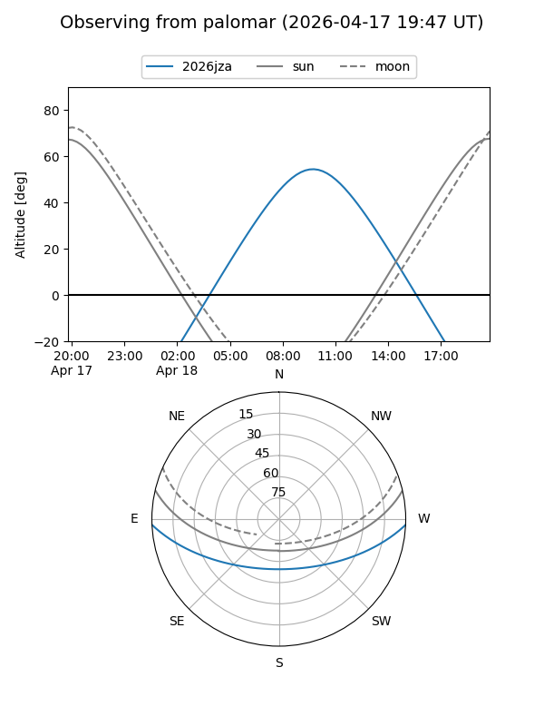
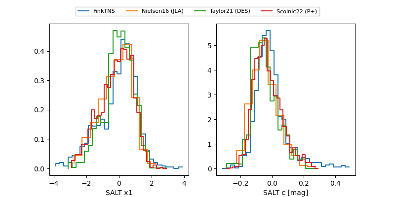

2026jza
Target 2026jza at 2026-04-18 10:21
Aliases and brokers:
FINK: link
Lasair: link
ALeRCE: link
TNS: link
YSE: link
alt names
ZTF26aatdzyb (ztf,fink_ztf)
2026jza (tns,yse)
Coordinates:
equatorial (ra, dec) = 235.2078,-2.08736
equatorial (HMS+DMS) = 15:40:49.88,-02:05:14.51
galactic (l, b) = (4.1905,+39.84495)
Flags:
Photometry:
last ztfg=19.68, ztfr=19.56
1 ztfg, 1 ztfr detections
Lightcurve

Visibility


Additional plots
